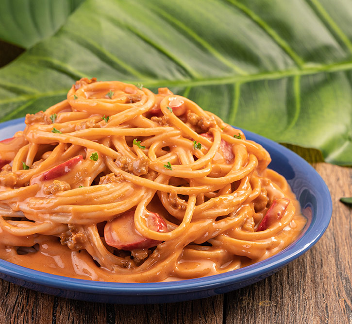

Filipino Style Creamy Spaghetti

Filipino Spaghetti is the Pinoy version of Spaghetti with meat sauce. This version has a sweet tomato based sauce with lots of meat ingredients such as ground pork, luncheon meat, and hotdogs. It is often served during kid's birthday parties along with some yummy fried chicken and cake.
Ingredients
- 1 tablespoon Vegetable Oil
- 2 cloves garlic, minced
- 1 piece onion, chopped
- 100 grams freshly ground pork
- 1/4 cup Tomato Sauce
- 1/4 cup Banana Catsup
- 2 pieces hotdog, sliced
- 1/2 cup Water
- 1 sachet MAGGI® Magic Sarap® 8g
- 1 tablespoon light brown sugar
- 1 packet 250ml NESTLÉ All Purpose Cream
- 250 grams Spaghetti
- 2 tablespoons grated cheese
How to cook?
- Sauté garlic and onion in oil. Add ground pork and cook for 5 minutes. Add tomato sauce, catsup, and hotdog. Pour water, cover, and simmer for 10 minutes.
- Season with MAGGI® Magic Sarap® and brown sugar. Pour NESTLÉ® All Purpose Cream and set aside.
- Boil pasta according to package direction.
- Strain spaghetti and toss in the sauce. Transfer on a serving plate and top with cheese. Serve immediately.